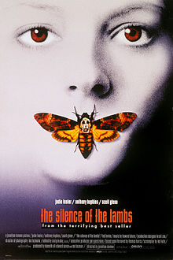

Editörün Seçtikleri
1- Inception (2010)

Özet ve Detaylar
Başlangıç filmi, doğaüstü ve büyülü gerçekçi tonları, bilim kurgu ve fantazmatik sinema estetiği ile harmanlayan ilginç senaryosuyla, Leonardo DiCaprio'nun üst düzey performans sergilediği değişik bir film. Bu yapımda sanatçı, çok yetenekli bir hırsız olan "Dom Cobb " ile karşımızda. Uzmanlık alanı, zihnin en karanlık ve savunmasız olduğu rüya görme anında, bilinçaltının derinliklerindeki değerli sırları çekip çıkarmak ve onları çalmaktır. Cobb'un bu nadir insanlarda görülebilecek yeteneği, bu ender rastgelinebilecek mahareti, onu kurumsal casusluğun tehlikeli yeni dünyasında aranan bir oyuncu yapmıştır. Aynı zamanda bu durum onu uluslararası bir kaçak yapmış ve sevdiği herşeye malolmuştur. Cobb'a içinde bulunduğu durumdan kurtulmasını sağlayacak bir fırsat sunulur. Ona hayatını geri verebilecek son bir iş; tabi eğer imkansız ?başlangıç'ı tamamlayabilirse. Mükemmel soygun yerine, Cobb ve takımındaki profesyoneller bu sefer tam tersini yapmak zorundadır; görevleri bir fikri çalmak değil onu yerleştirmektir. Eğer başarırlarsa, mükemmel suç bu olacaktır.
İMDB: 8.8/10
2- The Prestige (2006)

Özet ve Detaylar
19.yy sonlarında Londra’da Robert Angier, sevgili eşi Julia McCullough ve Alfred Borden hem arkadaştırlar hem de bir sihirbazın asistanlarıdırlar. Bir gösteri esnasında Julia ölünce Robert, onun ölümünden Alfred’i suçlar ve birbirlerine düşman olurlar. Zaman içinde ikisi de hem ünlü olurlar hem de rakip sihirbazlara dönüşerek birbirlerinin sahne üstünde performansını sabote etmeye kalkışırlar. Alfred başarılı bir hile yapınca Robert, rakibinin sırrını çözmek konusunu takıntı halinde getirir ve trajik olaylar birbirini kovalar.
İMDB: 8.5/10
3- The Matrix (1999)

Özet ve Detaylar
Bir yaşanan gerçek vardır, bir de yaşananın ötesinde olan gerçeklik... Biri rüya, diğeri ise Matrix! Neo,son derece tehlikeli bir adam olan Morpheus’un gerçeği bildiğine inanmaktadır. Bir gece Neo, kendisini başka bir dünyaya götürebilecek güzel yabancı Trinity ile tanışır. Bu kızın götüreceği dünyada, Neo Morpheus’u bulacak ve Matrix hakkında bir şeyler öğrenecektir. Neo, Tam olarak kavrayamadığı şeylerin yaşamını kontrol ettiğini biliyor.. Nedir bu Matrix?
İMDB: 8.7/10
4- Interstellar (2014)
Özet ve Detaylar
Teknik bilgisi ve becerisi yüksek olan Cooper, geniş mısır tarlalarında çiftçilik yaparak geçinmektedir; amacı iki çocuğuna güvenli bir hayat sunmaktır. Onlarla yaşayan Büyükbaba Donald çocuklara göz kulak olurken, henüz 10 yaşındaki kızı Murph şaşırtıcı bir zekaya sahiptir. Geçmişte bıraktığı biliminsanı kariyerini özleyen Cooper'un karşısına bir gün beklenmedik bir teklif çıkar ve ailesinin, dahası insanlığın güvenliği için zorlu bir karar alması gerekir... Christopher Nolan'ın, Jonathan Nolan ile kaleme aldığı ve yönetmenliğini sırtladığı filmin yıldız oyunculardan oluşan oyuncu kadrosunda Matthew McConaughey, Anne Hathaway, Jessica Chastain, Matt Damon, Bill Irwin, John Lithgow ve Michael Caine gibi isimler yer alıyor. Bilimkurgunun yanı sıra dramatik öğeler de içeren filmin senaryosu Fizikçi Kip S. Thorne'nun evrendeki 'Solucan Delikleri' teorisinden ilham alıyor.
İMDB: 8.6/10
5- The Lord of the Rings (film serisi)

Özet ve Detaylar
Yüzük Kardeşliği adındaki ilk film, Tolkien fanatikleri ve hikayeyle yeni tanışanlar tarafından çok beğenilmiş ve yönetmeni Peter Jackson’ı roman hayranlarının gözünde zirveye taşımıştı. İkinci film ise ilkinin kaldığı yerden devam ediyor. Yüzüklerin Efendisi üçlemesinin bu bölümünde, Yüzük Kardeşliği üyelerinin her birinin, kardeşlik bozulduktan sonra başlarına gelenler anlatılıyor. Kahramanlarımız, gruplar halinde Orta Dünya’nın en tehlikeli yerlerinde maceralar yaşayacaklar, yeni kavimler ve çoktan unutulmuş medeniyetlerle tanışacaklar. Frodo ve Sam, yanlarında zorunlu işbirliği yapacakları eski bir dost(!) olduğu halde Tek Yüzük’ü düşmanın tam kalbine götürmeye çalışırken, diğer hobbitler Urukhai’nin elinden kurtulabilecek mi? Karanlık tarafa geçmiş olan Saruman’ın yaptıkları yanına mı kalacak? Gandalf olmadan kahramanlarımızın başarılı olma şansı ne? Büyük karanlığın gelişi ve Yüzük Savaşı’na dek olanların anlatılacağı İki Kule, kuşkusuz üçlemenin en heyecanlı bölümlerinden birini oluşturuyor.J.R.R. Tolkien’in 3 kitaplık ölümsüz eserinden uyarlanarak bir yılı aşkın süren çekimler sonucu hepsi bir arada çekilen 3 filmden ikincisi olan İki Kule, 2002 Aralık ayında vizyona girmek üzere montajlanıyor ve son rötuşları yapılıyor.
İMDB: 8.7/10
6- The Godfather (1972)

Özet ve Detaylar
Mario Puzo’nun çok satan kitabından Puzo ve yönetmen Francis Ford Coppola tarafından sinemaya uyarlanan eser, 40’lar ve 50’lerin Amerika’sında, bir İtalyan mafya ailesinin destansı öyküsünü konu alıyor. Don Corleone’nin kızı Connie’nin düğününde, ailenin en küçük oğlu ve bir savaş gazisi olan Michael babasıyla barışır. Bir suikast girişimi, Don’u artık işleri yönetemeyecek duruma düşürünce, ailenin başına Michael ve ağabeyi Sonny geçer. Danışmanları Tom Hagen’in de yardımlarıyla diğer ailelere savaş açan Corleone ailesi, eski moda yöntemleri de değiştirmeye başlar. Film o yıl En İyi Film, En İyi Erkek Oyuncu ve En İyi Uyarlama Senaryo dallarında Oscar kazanmıştır. Yapılan araştırmalar sonucu Türkiye'de en fazla izlenen ve satılan film olma özelliği de taşır.
İMDB: 9.2/10
7- The Silence Of The Lambs (1991)

Özet ve Detaylar
Akademiden mezun olmuş genç FBI ajanı Clarice Starling, FBI ajanı kurbanlarının derilerini yüzen sapık bir katilin elinden bir kadını kurtarmaya çalışır. Clarice, katila ulaşmak için başka bir psikopat olan ünlü doktor Hannibal Lecter ile yakınlaşır. Lecter’dan bilgi alması için önce onun güvenini kazanması gerekmektedir. 1992 yılında 7 dalda Oscar’a aday olan film, yönetmeni ve başrol oyuncularına altın heykelciği getirirken en iyi film ve en iyi senaryo uyarlaması dalında da ödüle hak kazanmıştı.
İMDB: 8.6/10
8- Blade Runner (1982)